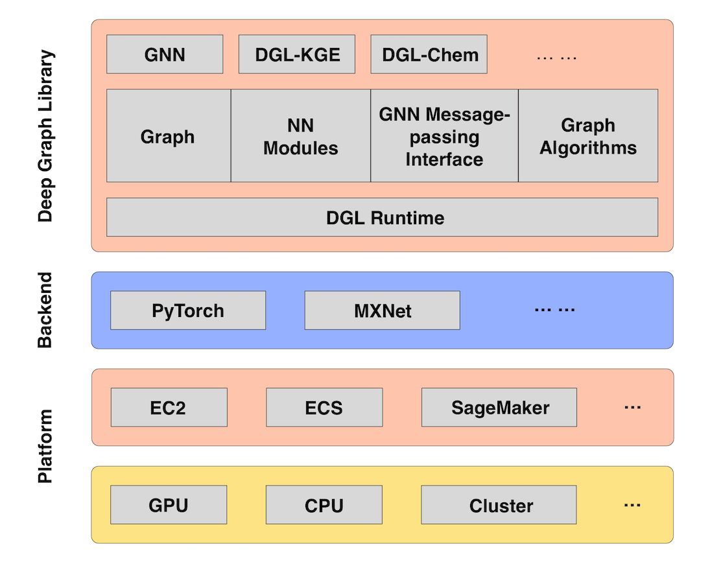

Train a Deep Graph Network
In this overview, you learn how to get started with a deep graph network by using one of the DGL containers in Amazon Elastic Container Registry (Amazon ECR). You can also see links to practical examples for deep graph networks.
What Is a Deep Graph Network?
Deep graph networks refer to a type of neural network that is trained to solve graph
problems. A deep graph network uses an underlying deep learning framework like PyTorch or
MXNet. The potential for graph networks in practical AI applications is highlighted in the
Amazon SageMaker tutorials for Deep Graph Library

Figure 1. The DGL ecosystem
Several examples are provided using Amazon SageMaker’s deep learning containers that are
preconfigured with DGL. If you have special modules you want to use with DGL, you can also
build your own container. The examples involve heterographs, which are graphs that have
multiple types of nodes and edges, and draw on a variety of applications across disparate
scientific fields, such as bioinformatics and social network analysis. DGL provides a wide
array of graph neural network
implementations for different types models
-
Graph convolutional network (GCN)
-
Relational graph convolutional network (R-GCN)
-
Graph attention network (GAT)
-
Deep generative models of graphs (DGMG)
-
Junction tree neural network (JTNN)
Get Started
DGL is available as a deep learning container in Amazon ECR. You can select deep learning containers when you write your estimator function in an Amazon SageMaker notebook. You can also craft your own custom container with DGL by following the Bring Your Own Container guide. The easiest way to get started with a deep graph network uses one of the DGL containers in Amazon ECR.
Note
Backend framework support is limited to PyTorch and MXNet.
Setup
If you are using Amazon SageMaker Studio, you need to clone the examples repository first. If you are using a notebook instance, you can find the examples by choosing the SageMaker icon at bottom of the left toolbar.
To clone the Amazon SageMaker SDK and notebook examples repository
-
From the JupyterLab view in Amazon SageMaker, go to the File Browser at the top of the left toolbar. From the File Browser panel, you can see a new navigation at the top of the panel.
-
Choose the icon on the far right to clone a Git repository.
-
Add the repository URL: https://github.com/awslabs/amazon-sagemaker-examples.git
-
Browse the newly added folder and its contents. The DGL examples are stored in the sagemaker-python-sdk folder.
Run a Graph Network Training Example
To train a deep graph network
-
From the JupyterLab view in Amazon SageMaker, browse the example notebooks
and look for DGL folders. Several files may be included to support an example. Examine the README for any prerequisites. -
Run the .ipynb notebook example.
-
Find the estimator function, and note the line where it is using an Amazon ECR container for DGL and a specific instance type. You may want to update this to use a container in your preferred Region.
-
Run the function to launch the instance and use the DGL container for training a graph network. Charges are incurred for launching this instance. The instance self-terminates when the training is complete.
Examples
An example of knowledge graph embedding (KGE) is provided. It uses the Freebase dataset, a knowledge base of general facts. An example use case would be to graph the relationships of persons and predict their nationality.
An example implementation of a graph convolutional network (GCN) shows how you can train a graph network to predict toxicity. A physiology dataset, Tox21, provides toxicity measurements for how substances affect biological responses.
Another GCN example shows you how to train a graph network on a scientific publications bibliography dataset, known as Cora. You can use it to find relationships between authors, topics, and conferences.
The last example is a recommender system for movie reviews. It uses a graph convolutional matrix completion (GCMC) network trained on the MovieLens datasets. These datasets consist of movie titles, genres, and ratings by users.
Use a Deep Learning Container with DGL
The following example uses preconfigured deep learning containers. This is the easiest to try since it works out of the box on Amazon SageMaker.
Bring Your Own Container with DGL
The following examples enable you to bring your own container (BYOC). Read the BYOC guide and familiarize yourself with that process before trying these. Configuration is required.